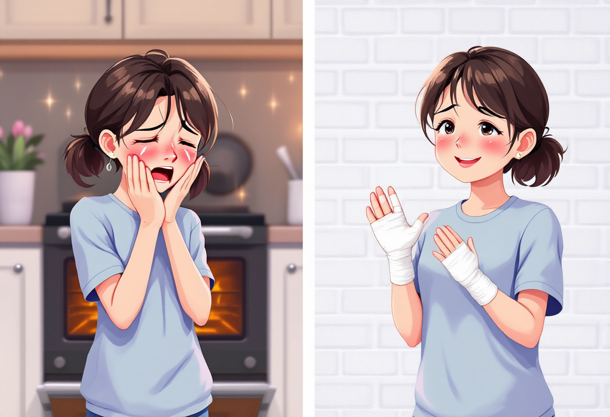
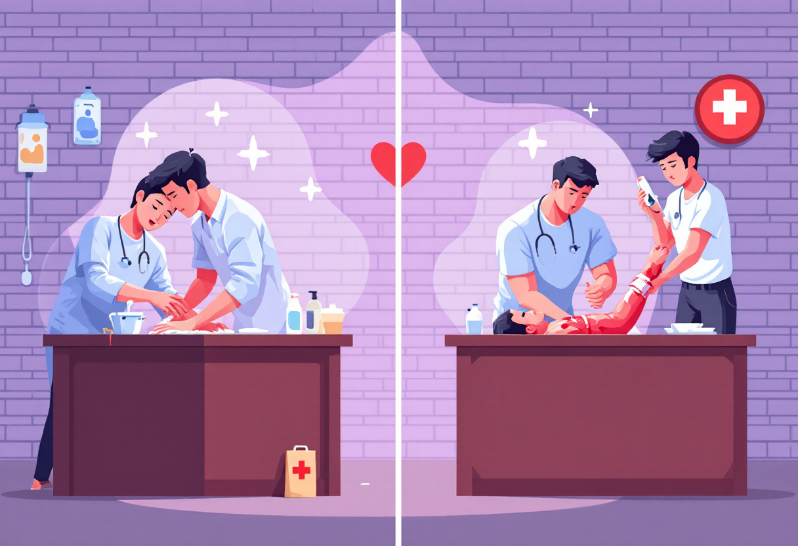
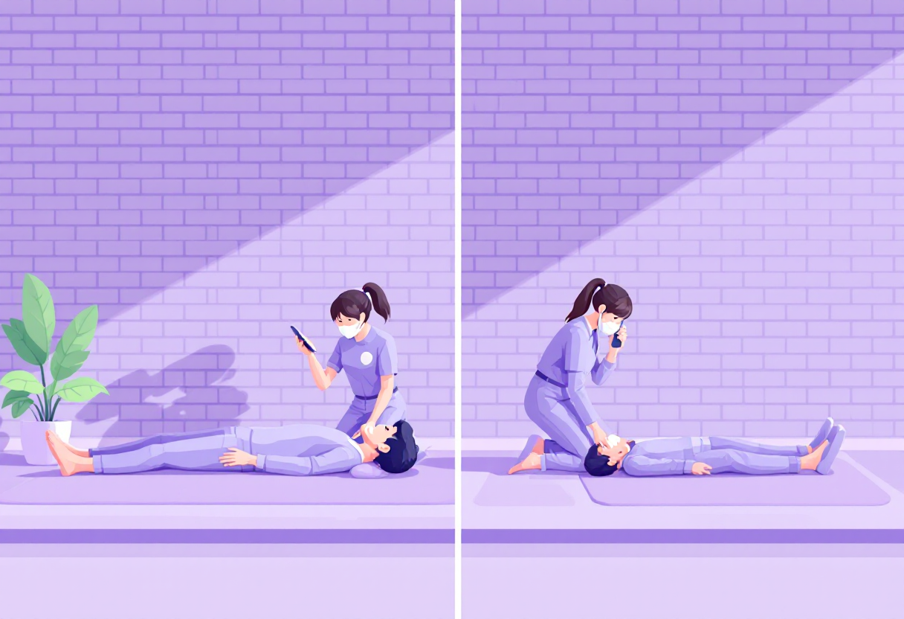
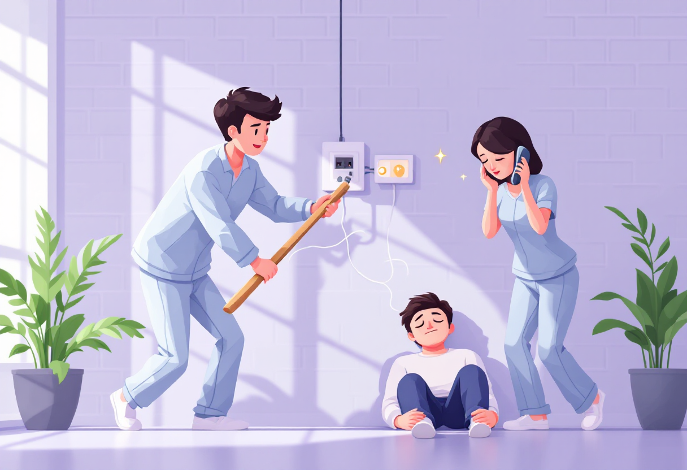
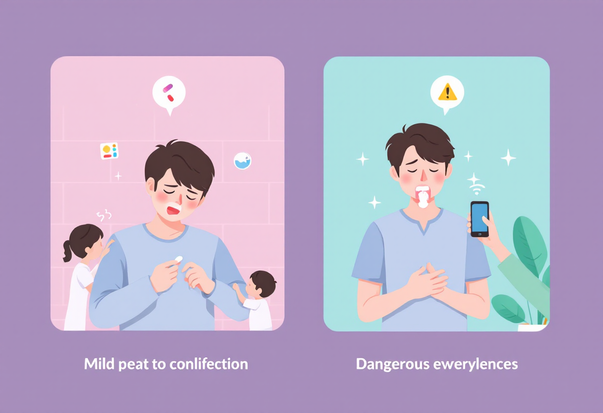
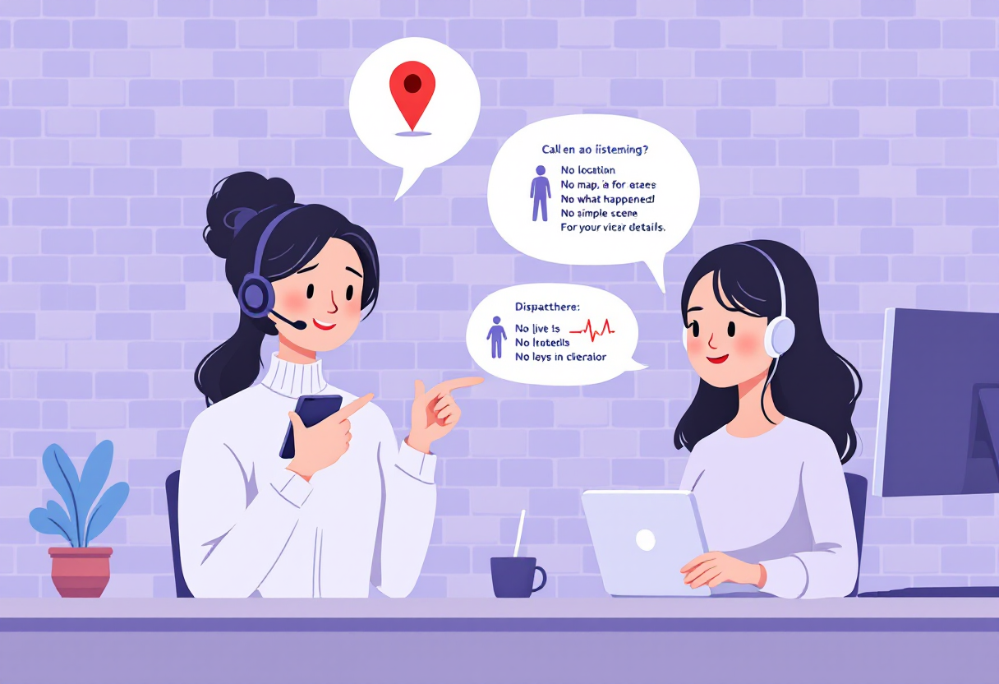

Невідкладні стани
Короткі алгоритми дій у типових ситуаціях.

Опіки
- Охолодити під прохолодною водою 10–15 хв.
- Не мазати маслом/спиртом.
- Якщо пухир великий → звернутися до лікаря.

Кровотеча
- Накласти чисту серветку або бинт.
- Тиснути 5–10 хвилин.
- Якщо сильна — накласти джгут вище рани, викликати швидку.

Втрата свідомості
- Перевірити дихання.
- Якщо дихає — покласти в стабільне бокове положення.
- Не давати пити, не трусити.
- Викликати 103.

Ураження електрикою
- Від’єднати людину від джерела (сухою дерев’яною палкою, гумою).
- Не торкатися голими руками.
- Викликати швидку навіть якщо «нічого не болить».

Алергічна реакція
- Таблетка антигістаміну (цетиризин/лоратадин).
- При набряку губ/язика — викликати 103, це може бути анафілаксія.

Алгоритм виклику швидкої (103)
Називаєш:
- адресу;
- що сталося;
- вік людини;
- чи дихає, чи є кровотеча;
- свій номер телефону.
!Не кидаєш слухавку першим— диспетчер завершує!